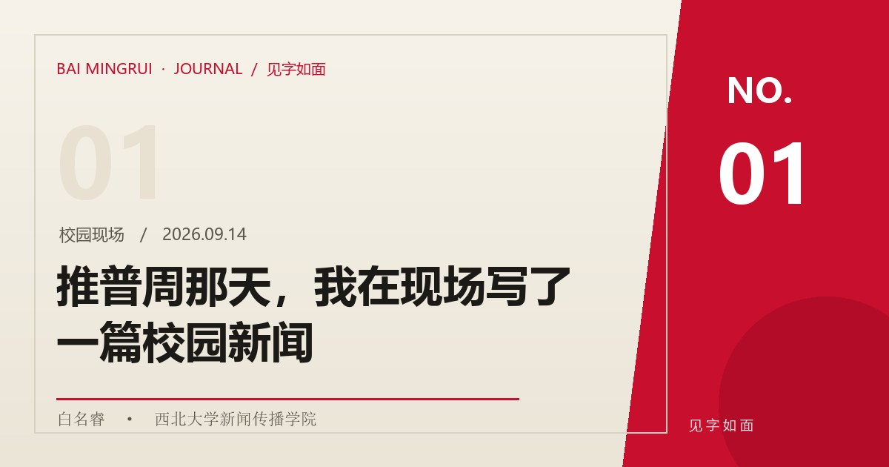

NO. 01 · 校园现场
推普周那天，我在现场写了一篇校园新闻
上午在活动现场做引导，下午把看到的东西写成一篇消息。这两件事之间的距离，比想象中短。

推普周那几天，我同时在做两件事：志愿服务的现场引导，和一门课的校园新闻写作练笔。后来发现，把它们当成一件事反而更顺——现场本身就是采访。
先在现场把细节记下来
那天负责引导和记录，手里一直攥着手机备忘录。我没急着写「活动圆满开展」，而是先记具体的东西：横幅挂在哪、咨询台前排了几个人、有同学拿着绕口令的卡片练了三遍、志愿者怎么给一位老师解释普通话水平测试的流程。
这些细节后来全用上了。消息写作课上老师反复强调，导语里不要先下结论，先让人看见现场。写的时候我才真正明白这句话的意思。
「新闻不是给活动写评语，是把现场搬给没来的人看。」
从练笔到总结报告
成稿在线提交之后，还有一份总结报告要交：正文加 12 项附件。这一部分花的功夫不比写稿少——标题层级、行距、页码、附件编号，以及每项材料对应的位置，都要能让人一眼找到。
- 附件按正文提到的顺序编号，不另起一套；
- 图片统一宽度、统一说明格式，不忽大忽小；
- 终稿先导出一份通读，再回头调排版，避免只盯着屏幕看。
做完整套流程最直观的感受是：写作和排版不是先后两道工序，它们一起决定读者能不能读下去。稿子写得再清楚，如果附件乱成一团，交付效果照样打折。